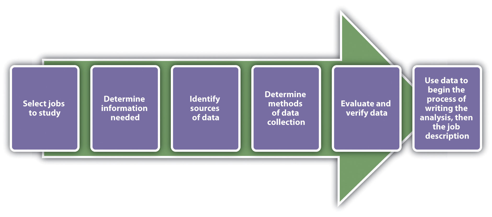

The recruitment process is an important part of human resource management (HRM). It isn’t done without proper strategic planning. RecruitmentA process that provides the organization with a pool of qualified job candidates from which to choose. is defined as a process that provides the organization with a pool of qualified job candidates from which to choose. Before companies recruit, they must implement proper staffing plans and forecasting to determine how many people they will need. The basis of the forecast will be the annual budget of the organization and the short- to long-term plans of the organization—for example, the possibility of expansion. In addition to this, the organizational life cycle will be a factor. Organization life cycle is discussed in Chapter 2 "Developing and Implementing Strategic HRM Plans". Forecasting is based on both internal and external factors. Internal factors include the following:
External factors might include the following:
Once the forecasting data are gathered and analyzed, the HR professional can see where gaps exist and then begin to recruit individuals with the right skills, education, and backgrounds. This section will discuss this step in HR planning.
Although it might seem easy, recruitment of the right talent, at the right place and at the right time, takes skill and practice, but more importantly, it takes strategic planning. In Chapter 2 "Developing and Implementing Strategic HRM Plans", development of staffing plans is discussed. An understanding of the labor market and the factors determining the relevant aspects of the labor market is key to being strategic about your recruiting processes.
Based on this information, when a job opening occurs, the HRM professional should be ready to fill that position. Here are the aspects of developing a recruitment strategy:
The first step in the recruitment process is acknowledgment of a job opening. At this time, the manager and/or the HRM look at the job description for the job opening (assuming it isn’t a new job). We discuss how to write a job analysis and job description in Section 4.1.2 "Job Analysis and Job Descriptions".
Assuming the job analysis and job description are ready, an organization may decide to look at internal candidates’ qualifications first. Internal candidatesSomeone who applies for a position within the company who is already working for the company. are people who are already working for the company. If an internal candidate meets the qualifications, this person might be encouraged to apply for the job, and the job opening may not be published. Many organizations have formal job posting procedures and bidding systemsA system or a process in which job advertisements may be posted internally through a predetermined method so all employees have access to them. in place for internal candidates. For example, job postings may be sent to a listserv or other avenue so all employees have access to them. However, the advantage of publishing open positions to everyone in and outside the company is to ensure the organization is diverse. Diversity is discussed in Chapter 3 "Diversity and Multiculturalism". We discuss more about internal and external candidates and bidding systems in Chapter 5 "Selection".
Then the best recruiting strategies for the type of position are determined. For example, for a high-level executive position, it may be decided to hire an outside head-hunting firm. For an entry-level position, advertising on social networking websites might be the best strategy. Most organizations will use a variety of methods to obtain the best results. We discuss specific strategies in Section 4.3 "Recruitment Strategies".
Another consideration is how the recruiting process will be managed under constraining circumstances such as a short deadline or a low number of applications. In addition, establishing a protocol for how applications and résumés will be processed will save time later. For example, some HRM professionals may use software such as Microsoft Excel to communicate the time line of the hiring process to key managers.
Once these tasks are accomplished, the hope is that you will have a diverse group of people to interview (called the selection process). Before this is done, though, it is important to have information to ensure the right people are recruited. This is where the job analysis and job description come in. We discuss this in Section 4.1.2 "Job Analysis and Job Descriptions".
The job analysisA formal system developed to determine the tasks people actually perform in their jobs. is a formal system developed to determine what tasks people actually perform in their jobs. The purpose of a job analysis is to ensure creation of the right fit between the job and the employee and to determine how employee performance will be assessed. A major part of the job analysis includes research, which may mean reviewing job responsibilities of current employees, researching job descriptions for similar jobs with competitors, and analyzing any new responsibilities that need to be accomplished by the person with the position. According to research by Hackman and Oldham,J. Richard Hackman and Greg R. Oldham, “Motivation through the Design of Work: Test of a Theory,” Organizational Behavior and Human Performance 16, no. 2 (August 1976): 250–79. a job diagnostic survey should be used to diagnose job characteristics prior to any redesign of a job. This is discussed in Chapter 7 "Retention and Motivation".
To start writing a job analysis, data need to be gathered and analyzed, keeping in mind Hackman and Oldham’s model. Figure 4.1 "Process for Writing the Job Analysis" shows the process of writing a job analysis. Please note, though, that a job analysis is different from a job design. Job designRefers to how a job can be modified or changed to be more effective—for example, changing tasks as new technology becomes available. refers to how a job can be modified or changed to be more effective—for example, changing tasks as new technology becomes available. We discuss job design in Chapter 7 "Retention and Motivation" and Chapter 11 "Employee Assessment".
Figure 4.1 Process for Writing the Job Analysis
The information gathered from the job analysis is used to develop both the job description and the job specifications. A job descriptionA list of tasks, duties, and responsibilities of a job. is a list of tasks, duties, and responsibilities of a job. Job specificationsThe skills and abilities the person must have to perform the job., on the other hand, discuss the skills and abilities the person must have to perform the job. The two are tied together, as job descriptions are usually written to include job specifications. A job analysis must be performed first, and then based on that data, we can successfully write the job description and job specifications. Think of the analysis as “everything an employee is required and expected to do.”
Figure 4.2 Sample Job Analysis Questionnaire

This questionnaire shows how an HR professional might gather data for a job analysis. Questionnaires can be completed on paper or online.


Two types of job analyses can be performed: a task-based analysis and a competency- or skills-based analysis. A task-based analysis focuses on the duties of the job, as opposed to a competency-based analysis, which focuses on the specific knowledge and abilities an employee must have to perform the job. An example of a task-based analysis might include information on the following:
With task job analysis, the specific tasks are listed and it is clear. With competency based, it is less clear and more objective. However, competency-based analysis might be more appropriate for specific, high-level positions. For example, a competency-based analysis might include the following:
You can clearly see the difference between the two. The focus of task-based analyses is the job duties required, while the focus of competency-based analyses is on how a person can apply their skills to perform the job. One is not better than the other but is simply used for different purposes and different types of jobs. For example, a task-based analysis might be used for a receptionist, while a competency-based analysis might be used for a vice president of sales position. Consider the legal implications, however, of which job analysis is used. Because a competency-based job analysis is more subjective, it might be more difficult to tell whether someone has met the criteria.
Once you have decided if a competency-based or task-based analysis is more appropriate for the job, you can prepare to write the job analysis. Of course, this isn’t something that should be done alone. Feedback from managers should be taken into consideration to make this task useful in all levels of the organization. Organization is a key component to preparing for your job analysis. For example, will you perform an analysis on all jobs in the organization or just focus on one department? Once you have determined how you will conduct the analysis, a tool to conduct the analysis should be chosen. Most organizations use questionnaires (online or hard copy) to determine the duties of each job title. Some organizations will use face-to-face interviews to perform this task, depending on time constraints and the size of the organization. A job analysis questionnaire usually includes the following types of questions, obviously depending on the type of industry:
Once all employees (or the ones you have identified) have completed the questionnaire, you can organize the data, which is helpful in creating job descriptions. If there is more than one person completing a questionnaire for one job title, the data should be combined to create one job analysis for one job title. There are a number of software packages available to help human resources perform this task, such as AutoGOJA.
Once the job analysis has been completed, it is time to write the job description and specifications, using the data you collected. Job descriptions should always include the following components:
Figure 4.3 Sample Job Description

Notice how the job description includes the job function; knowledge, skills, and abilities required to do the job; education and experience required; and the physical requirements of the job.
Once the job description has been written, obtaining approval from the hiring manager is the next step. Then the HR professional can begin to recruit for the position. Before we discuss specific recruitment strategies, we should address the law and how it relates to hiring. This is the topic of Section 4.2 "The Law and Recruitment".
Be sure to include the pertinent information:
A short video on how to write an effective job description, with examples.
Does your current job or past job have a job description? Did it closely match the tasks you actually performed?
Do an Internet search for “job description.” Review three different job descriptions and then answer the following questions for each of the jobs: